Let the original play.
Native MPV playback for original audio streams and local files. Keep your FLACs, WAVs, and everyday MP3s together. Optional ReplayGain, EQ, exclusive output and shared-output music crossfade.
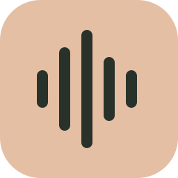
Media CenterYOUR OWN FREQUENCYVERSION 1.2.1 · WINDOWS · OPEN SOURCE
The albums you return to. The stories you get lost in. Bring your collection together in one thoughtful desktop player.
Your servers. Your files. Native MPV playback. Meet Media Center 1.2.1 ↗
Navidrome
Audiobookshelf
Local files
NEW IN 1.2
Build custom music mixes with artists, genres, favorites and grouped rules. Rediscover more recently played albums, browse cleaner collection headers and organized actions, and resume stories in dedicated listening grids. Find finished podcast episodes and preview new artwork with an additional search provider. Version 1.2.1 brings consistent episode controls, opaque menus, integrated playlist cover design and a clearer Saved queues panel.
A LITTLE SPACE FOR YOURSELF
Browse your records, follow a chapter, or catch up on a show. Each kind of listening has a place of its own.
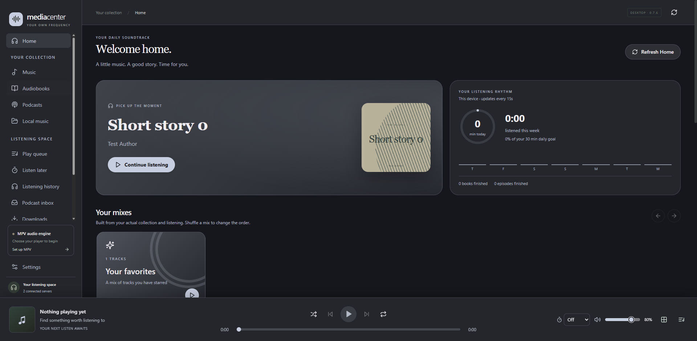
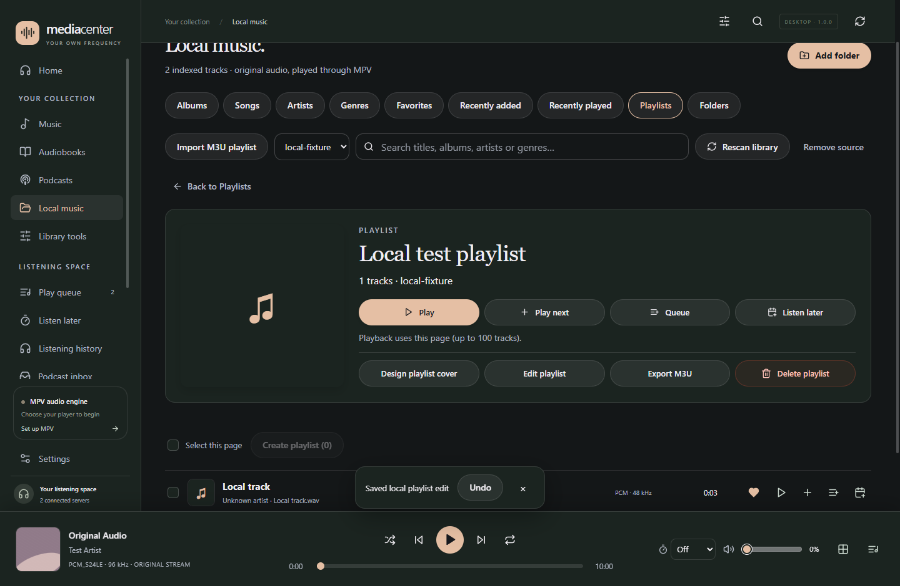
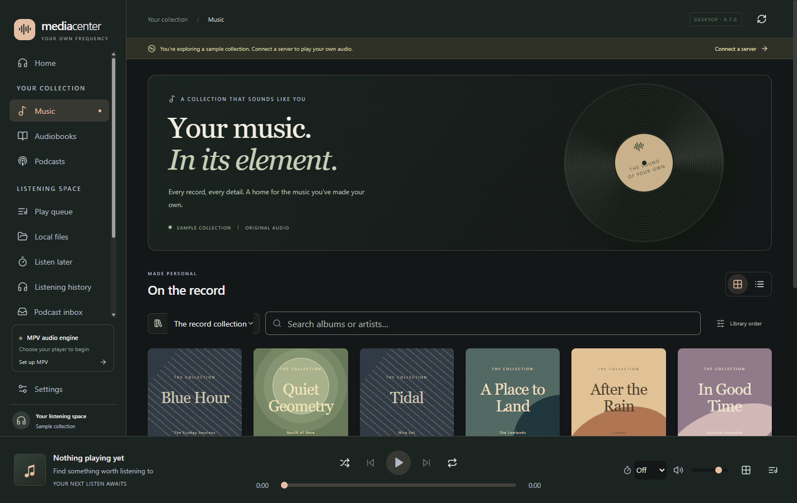
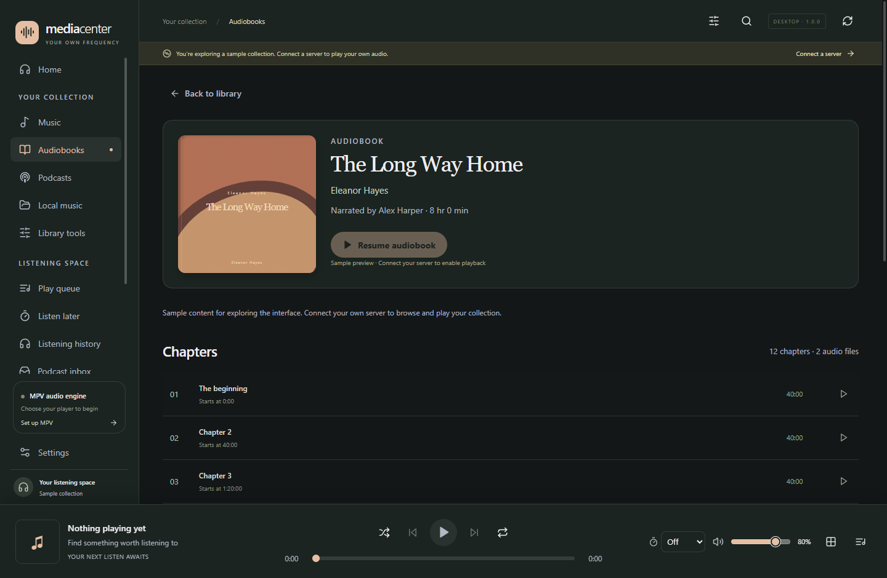
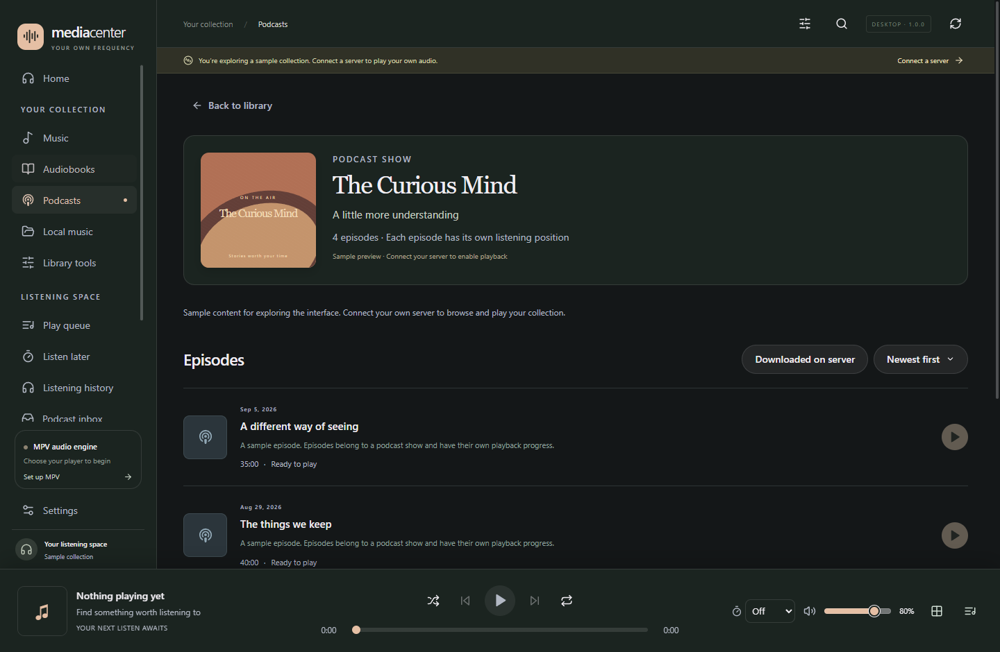
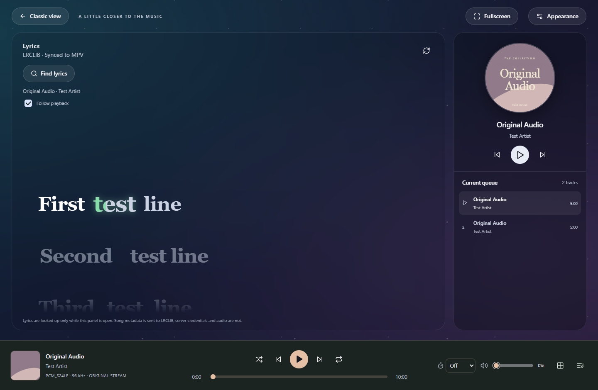
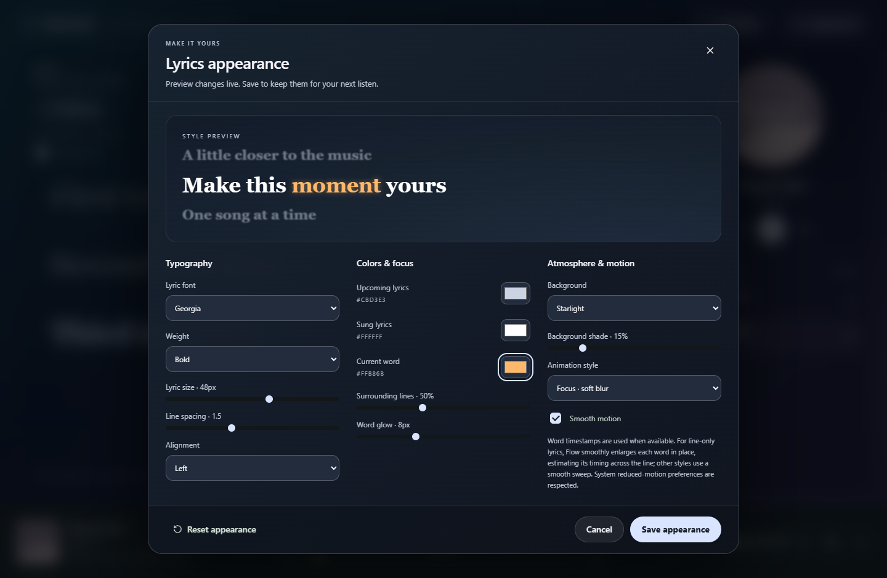
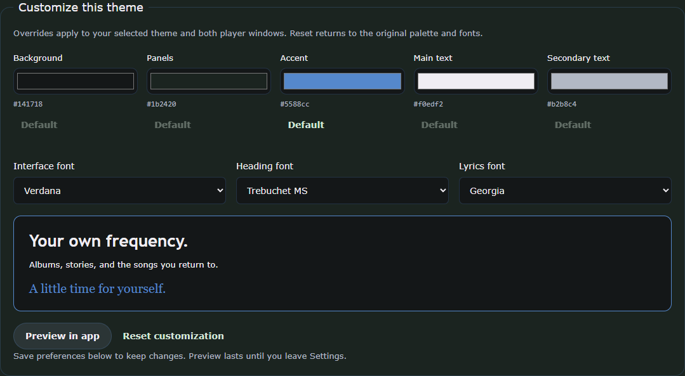
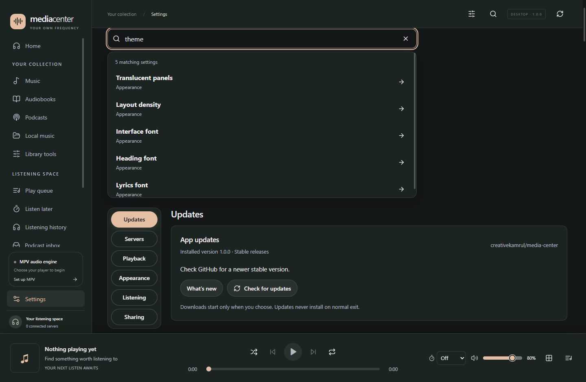
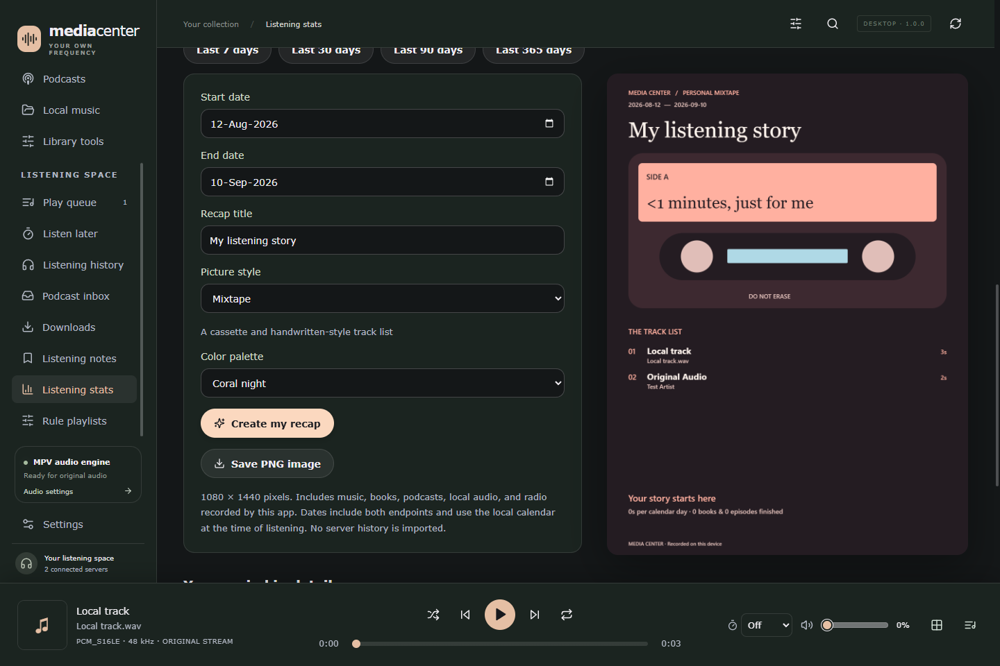
Real app screenshots, using sample collections and controlled playback test data. Music and books are not bundled.
GOOD SOUND. LESS FRICTION.
From a high-resolution album to one more chapter before bed. The little things should feel easy.
Native MPV playback for original audio streams and local files. Keep your FLACs, WAVs, and everyday MP3s together. Optional ReplayGain, EQ, exclusive output and shared-output music crossfade.
Audiobookshelf resume and progress sync, independent podcast episode status, listening notes, and a Listen Later list for the things you want to return to.
An always-on-top mini player, saved queues, fullscreen, and original-quality offline downloads. A command palette, undo, larger covers and clear volume controls stay within reach. Your listening can stay close while you get on with your day.
Follow synchronized lyrics from LRCLIB, or search and bind your preferred match to a song. Saved matches stay in your local database for next time, including offline. Import LRC/TXT files and edit timing locally. Set lyric fonts, colors, backgrounds and word emphasis in either player view. Word timing is exact when supplied, otherwise estimated for line-timed lyrics.
Choose from thirteen themes including Glass and Black Glass. Adjust colors and fonts, import local theme CSS with a live preview, and search directly for the setting you need. Save listening profiles to return to a favorite setup.
See your daily goal and recent activity on Home, or export a Recap for your chosen dates in 12 distinct layouts and 12 palettes, with streaks, rankings and previous-period comparisons. Create and save your own music mixes with artist, genre, year and favorite rules, alongside mixes from your listening history. Optional Discord presence can share what’s playing with Last.fm cover art.
YOUR LISTENING, REMEMBERED
12 layouts. 12 palettes. Choose your dates, add a title and export a poster worth keeping. Each design tells your listening story differently.
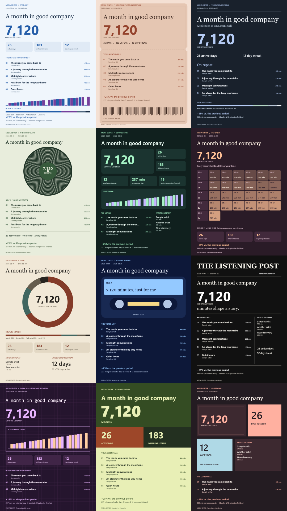
Real Recap exports with illustrative data. Statistics come from listening recorded on your device.
YOUR NEXT LISTEN AWAITS
Media Center is a Windows desktop app. Connect your own media servers or choose a local folder to get started.
Get the Windows installerFree under GPL-3.0-only · Current installers are unsigned.
Download the Windows x64 EXE from GitHub Releases and run the installer.
Select your existing mpv.exe in Settings. MPV is a separate installation; it isn’t bundled. Get MPV ↗
Add Navidrome or Audiobookshelf in Settings. For local audio, choose Your collection → Local music → Add folder.
A FEW THINGS TO KNOW
No. Media Center is a client for your own Navidrome and Audiobookshelf servers, and a player for folders you select. Sample collections are included to explore the interface, but they aren’t playable media.
The compatibility baseline is Navidrome 0.60.3 and Audiobookshelf 2.35.1, with MPV 0.38 or newer. See the user guide for setup and current limitations. Full Feishin and Audiobookshelf feature parity is a longer-term goal.
Settings, queues, lyric bindings, and local listening history are stored in SQLite. Saved credentials use Windows protection. Optional lyrics and artwork lookups through LRCLIB, Last.fm, MusicBrainz/Cover Art Archive and Apple iTunes send relevant metadata, and enabled Discord presence shares activity. The app has no configured analytics service; this landing page uses no analytics scripts.
Open Settings → Updates to check GitHub for a newer stable release. Choose when to download and restart to install. MPV is updated separately.
Absolutely. Bug reports, documentation, testing, and code contributions are welcome. Start with the contribution guide and feature inventory. The project is licensed GPL-3.0-only.
BUILT IN THE OPEN
A personal project, made to be shared and improved together.
Explore the project on GitHub